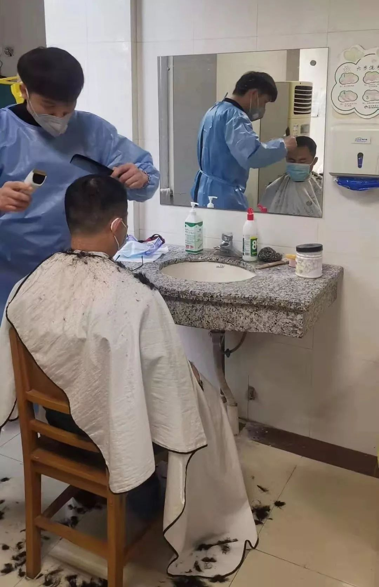
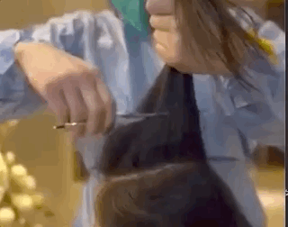

武汉外卖小哥：害怕是正常的，但我希望自己一直是冷静的
原文链接 备份链接 ** 在武汉这座几乎停摆的城市里，一群外卖小哥和他们背后的团队还在正常运转。他们需要每天前往收治新冠肺炎的定点医院，给一线医护人员送餐，是连接这座城市的动线。这项“医护关爱计划”，是在1月26日开始的，饿了么联 …


沈杰把为医务人员理发的短视频上传到社交网络，获得了两种意料之外的回应：一种说他“胆子大”，“这种时候还敢到医院去”，另外一种，则是更多医务人员请他帮忙。
对他而言，自己只是偶然接到了一个医生的电话，了解对方困境后没犹豫，义务为武汉第四医院检验科的6名医生剪了头发，得到一个口罩与一次免费体检作为回报。可看到前一种回应，他才开始后怕，决定在进入医院前后认真消毒。但是这也没有挡住他的步伐，他继续关注后一种回应，系统地与医院对接，为医护人员提供免费理发服务。
疫情爆发的当下，在医院，过长的头发会有携带病毒的风险，医务人员有非常大的理发需求。沈杰开始连续工作，两周内跑了八九家医院，最累的时候一天站了8个小时，理了65个头。这位武汉的发型师被医务工作者的付出触动，兴奋于自己终于能为抗击疫情献上一份力，但也面临体力透支、缺少人手、没有运载车辆等问题。
以下是沈杰的自述。
文 | 熊韧凯
编辑 | 萧祷
运营 | 肖睿
2月4号中午，我突然接到一个电话。对方说他是武汉市第四医院的，姓陈，做病毒检验的。他和同事头发需要剪，很着急，之前打了电话问其他理发店，没有人去，问我能不能去帮他们剪头发。
我是黄冈人，今年三十一岁，做美发已经十二年了。四年前，我回到湖北，在武汉开了家自己的店。受疫情影响，理发店无法正常营业，来电话的时候我正在家，已经十多天没怎么出门了。
陈医生说，他们很多人头发已经很久没剪了，现在也没时间打理，而且隔离衣要穿好几层，几个小时下来，整个身上都被汗浸湿了，更别说头发。更重要的是，他们做病毒检验，万一长头发掉在地上，就可能沾染病毒。头发再粘到医生的鞋上，病毒有可能被带出了检验室。
听到这里，我说好，我马上带着工具过来。答应他的时候，我真的是没有一丝担心，脑子里什么都没想。之前看新闻，画面里医生穿那么厚的防护服，走路都走不稳，就觉得他们挺不容易的。现在终于能为他们和抗击疫情做点事，心情特别兴奋，只想着赶紧去给他们理发，理完就回家。
陈医生说会给我报酬。我说不用付钱，你到时候给我一个口罩就行。提出这个诉求是我以为进医院要戴特殊的口罩，自己的口罩也只剩下一个了，他说可以，我也就放心了。
四医院离我的店不远，离我住的地方也只要步行十几分钟，我戴上口罩拿着工具就去了。当时，武汉路上的人还没有像现在这么少，出小区也不会有保安问我去哪。医院附近倒是没看见有什么人，我从外面绕了一圈，到了与陈医生约定见面的医院后门。
我本以为陈医生之前是我的顾客，所以才找到我，见面时还问他，陈医生说自己并没在我的店理过发，而是在网络上搜了医院附近的所有理发店，然后一个一个打电话，我是最先答应的。
他和5个需要理发的同事已经换上了白大褂，戴着口罩和医用的帽子。
理发之前他们给我消了毒，还给了我隔离衣、手套和口罩。后来我才知道，自己好不容易买到的口罩有呼吸阀，在医院用并不完全保险。
我没有进到病区或者具体的科室，理发是在保洁阿姨的休息间，那里之前是检验科的标本室，有面镜子，医生说卫生上比较安全。检验科都是男医生，我一看他们的头发，大概都有两个月没剪了。他们说，不管之前是什么发型，现在都剪成短碎发，我就按要求给他们剪到一公分长左右。
隔离衣和手套里面又闷又热，这是我从未有过的经历。不过，给医生理发最大的难处还不是这个。由于他们不能摘口罩，耳朵旁边的头发很难剪，我需要一只手扒拉着耳朵，用这只手上的手指把口罩带子往下拉一点，再用另一只手去剪那里的头发。

▲在武汉市第四医院的保洁阿姨休息间，沈杰第一次为医护人员们理发。图 / 受访者供图
给6个医生理完发之后，他们又要付我钱，我坚持说不要，他们说那我们也没什么别的可以回报你，要不然让你免费做次常规体检吧。我一开始没答应，毕竟看他们挺忙的，但他们说这样也是为了你的身体好，我就同意了。
体检是在医院的门诊部，现在常规的门诊部已经没什么病人了。这次理发经历中接触的医生，和我的印象挺不同的。在我之前的印象中，去医院要排特别长的队，医生也都是很高傲的样子，但这次，他们让我感觉特别有亲和力，服务特别好，不停地说感谢我、我很勇敢，还往我手里塞饼干、自热米饭之类的。
回家的路上，我就想着我做理发这么多年，居然跑到医院给医生剪头，觉得特别开心。
去医院之前，我走得急也没多想，没告诉身边的亲戚朋友。在医院，我把理发的场景拍下来，还和医生一起录了个短视频。短视频发到社交媒体上之后，底下不少评论都说，你胆子真大，医院这么危险的地方，你这个时候往那里跑？
看到这些评论，一直兴奋的我才终于开始担心和害怕。我用84消毒液在家消毒，还决定如果再去医院，去之前和回家后都要洗半个小时的热水澡。
后来我又陆续去了武汉四院两次，也录了短视频发到网上，没想到评论、点赞都特别多。很多医院或者外地支援的医疗队都给我发私信，说它们的医务人员也有理发需求，希望我能为他们理发。
但也有困难。首先就是人手的问题，我有两个同行群，一个汉口（地区）的一个武汉全市的，我在群里呼吁同行一起，每个人对接离自己家较近的医院。
结果不是很理想。很多理发师不是本地人，封城前就回家了。他们虽然在群里说自己想帮忙，但大家也都清楚现在根本进不来。也有一些武汉本地的，一开始表示愿意，但后来因为家里人反对之类的原因，也没有办法参与。我还挺失望的。
不过慢慢地，还是有人加入进来了。现在据我所知，有十几个理发师在做这样的事情，多是家在外地但今年过年没回去的。大家分头行动，到离自己住处比较近的医院理发。

▲除了沈杰以外，在武汉有越来越多的理发师开始加入免费为医护人员理发的队伍。图 / 中国新闻网中新视频
另一个困难是，车辆没那么好找了，但是医院的需求依然很急迫，有时候就只能由他们联系车辆接我。今天（指接受采访的2月15日）武汉下了雪，东西湖区医院请我去为他们的医务人员理发，我下楼一看，来接我的是辆救护车。这是我第一次坐救护车。
在东西湖区医院，轮到一个女生来剪，她说你一定要把我剪好看哦！因为明天是个特殊的日子。我问她是什么，她说是她的生日。我祝她生日快乐，并且告诉她虽然要剪短，但我也一定会剪得好看。
两周以来，我跑了七八个地方，给不同的医务工作者剪头发。最令我印象深刻的是去为支援方舱医院的云南和贵州医疗队理发，理发的地点是在他们入住的酒店大堂。

▲沈杰坐救护车去为医护人员理发。图 / 受访者供图
为这么多人剪了头发，我觉得这些外地支援医疗队是最勇敢的。他们对发型不提任何要求，只要求剪短。一个女孩子，贵州来的，长发及腰，直接就跟我说剃光。我问她舍得吗，她就说剪吧，还会再长的。我又问她来武汉怕不怕，她说怕，肯定怕。但从头到尾，我没看她流露出难过或者不舍。
我是一个发型师，看见女孩子把这么长的头发剃光，肯定是不舍的。我相信她也是，但迫于现在这种情形，真的没有办法。
那也是我最累的一天。除了中间吃了顿饭，一个人在那站了八个小时，给65个人剪了头发。

▲为了工作便利，许多女医护人员选择了把一头长发剃光或剃成寸头。图 / 受访者供图
我有顾客在华南海鲜市场做海鲜批发生意，小年前后我听说了这个新型冠状病毒的事，当时就很谨慎，也在网上看到病例在增加。20号，新闻说这个病会人传人，我觉得太吓人了，就把店关了。
我18岁从学徒做起，梦想是成为一个明星发型师，这也是行业里不少人梦寐以求的，但真正能做到的很少。为了学这个我花了不少钱，也跑了很多地方，去过上海、深圳、香港，找技术高的发型师学习培训。
后来我实现了自己的梦想，在杭州，得到一份工作，可以给一些大牌的明星做发型。当时非常满足，甚至觉得已经做到了巅峰。但后来又觉得，总是在外地打工也不是长久之计，父母年纪又大了，需要离他们近一点方便照顾他们。
我回到武汉开店，自认为在这一带做得还不错，顾客都挺认可我。年前关店之后，还有老顾客给我发微信，说他不得不换了家店做头发，结果觉得对方手艺不行，效果还不如鸡爪子在他头上抓两下。
我的店是整条街上最早关门的理发店，那时候快过年，正是生意最火爆的时候，顾客肯定是不理解的嘛。21号我去关店，卷闸门刚拉了一半，就来了两个顾客，说要剪头发。我说现在情况太严重了，能不能年后来剪？我当时定的是大年初八开业。他们就跟我吵，说你本来不是说年二十九放假吗？就帮我剪一下不行吗？
我解释了一大堆，说你要是为大家好的话，还是年后再来剪。他们也不听，我最后还是把卷闸门拉下来锁了，场面闹得挺不愉快。
我的心态一直是比较顺其自然的，认为别的事都没什么，只要人是健康、安全的就好。20号那天我下单了几个口罩，打电话和在黄冈的父母说暂时不回家过年了，他们说菜都准备好啦，房间都给你收拾出来啦，我只能说我在武汉，回到黄冈对他们来说也不安全，而且要他们也戴口罩、多洗手和通风。
关店之后，我就一直宅在家里，疫情影响之下，店的压力当然也不小，每个月光是房租就要上万，几个员工也需要开支。
但我没有想过给医生有偿理发来挽回损失。短视频火了之后，有本地的报纸找到我，后来那个记者和我说一家企业为我评了个“正能量”奖，要奖励我一万块钱。我当时还以为他在开玩笑，后来记者把证书发给我看我才相信。

▲沈杰获得的荣誉证书。图 / 受访者供图
我立刻就问，能不能把这个钱直接捐给医院？他说他帮我问一下，看看能不能定向捐赠。最后那家企业说，一定要把钱打到我账上，之后怎么处置是我的事。
我不要这些钱，一方面是觉得这是一件荣幸的事，能为抗击疫情出自己的一份力，另一方面我也是挺乐观的一个人，亏一点就亏一点，在现在这个状况下，同行都不好过，自己平安健康胜过一切。
我是很热爱美发这个行业的。这是一份能带来美的工作，当你通过自己的工作使别人有了一个好看的发型，别人会开心，你也很有成就感。至于最近给医生理发，成就感是完全不同的，更多来自于感受到自己在贡献力量，这么些天下来，我越做越兴奋。
但身体还是有些透支，我们做这行需要长期站着，久了都有些颈椎问题。最近这样连轴转，两个胳膊根部和颈椎都特别酸痛。除此之外，在医院理发要戴医用手套，这几次一戴就是至少五个小时，手上不停出汗，又蒸发在手套里，一脱下来，整个手都白了。
现在医护人员理发需求量这么大，能为他们服务的理发师又不多。你看现在是晚上十一点半，我刚刚吃完饭，采访结束后还要和医院的人对接。这段时间实在是太忙了，等稍微闲下来，我要做的第一件事就是把那家企业给我的一万块钱买成物资，捐给四医院。

每人互动
你的头发长了吗？

文章为每日人物原创
侵权必究


每人作者
长按二维码向我转账
受苹果公司新规定影响，微信 iOS 版的赞赏功能被关闭，可通过二维码转账支持公众号。
原文链接 备份链接 ** 在武汉这座几乎停摆的城市里，一群外卖小哥和他们背后的团队还在正常运转。他们需要每天前往收治新冠肺炎的定点医院，给一线医护人员送餐，是连接这座城市的动线。这项“医护关爱计划”，是在1月26日开始的，饿了么联 …
原文链接 备份链接 原创 钟玄雅 真实故事计划 真实故事计划 4天前 武汉是世界上大学生最多的城市之一。新型冠状病毒肺炎疫情爆发后，一百余万大学生返乡，成为各地防止传染的重点防控隔离对象，遭遇着忧虑、歧视和隐私泄露。疫情给这群新鲜人上了社 …
原文链接 备份链接 1月21日下午，我们三人就住进了武汉金银潭的一家酒店，然后迅速开始了解情况。两位记者去华南海鲜市场摸情况，我一边做北京朝阳医院陶勇医生被伤事件的电话采访、赶微信稿，一边询问武汉的医生朋友。我们三人在酒店房间第一次碰面 …
原文链接 备份链接 1月23日，武汉市公共交通停运。一些本地的私家车主决定为医务人员护航，免费接送他们上下班，并运送救援物资到各大医院。34岁的车车便是其中一员。 文 | 吴美芬 从1月底开始，车车几乎跑遍了武汉每一个医院，为医护人员送 …
原文链接 备份链接 大家好，我是田静。 2003年「非典」期间，柴静采访战斗在一线的医护人员：「你们靠什么防护？」 当时医生的回答是：「我们靠精神防护。」 17年后，又一轮疫情，医疗资源依然紧缺。 我们的武汉姑娘宸宸，这些天都坚持在前线做 …